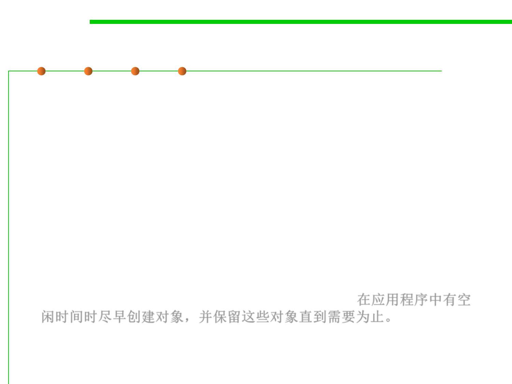

Preallocating Objects
8.3 Code Tuning for Performance Optimization
▪ There may be situations in which you cannot avoid creating
particular objects in significant amounts.
▪ You can still create the objects, but move the creation time to a part of
the application when more spare cycles are available or there is more
flexibility in response times.
▪ The idea is to choose another time to create some or all of the objects
(perhaps in a partially initialized stage) and store those objects until
they are needed.
▪ In one word: Create objects early, when there is spare time in the
application, and hold those objects until required. 在应用程序中有空
闲时间时尽早创建对象，并保留这些对象直到需要为止。